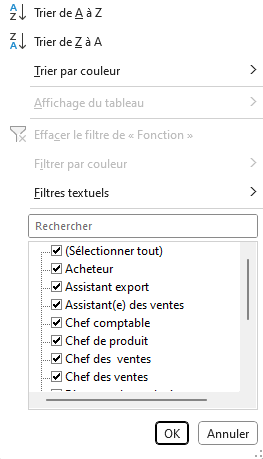
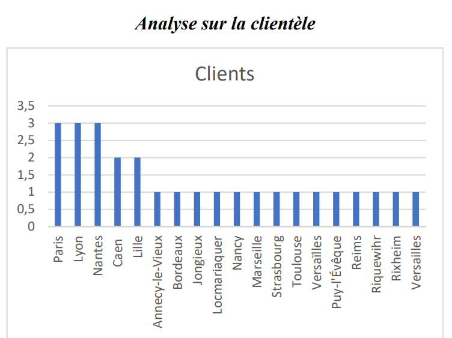

Présentation
Bienvenue sur la mission 1.
L’objectif de cette mission est de commencer à manier excel en répondant aux différentes questions sur l'entreprise fictive Kdou

Bienvenue sur la mission 1.
L’objectif de cette mission est de commencer à manier excel en répondant aux différentes questions sur l'entreprise fictive Kdou
Notre équipe étudie et exploite les données de KDou pour permettre de les aider. Les données se trouvent dans un tableur Excel.
Nous avons d'abord étudié les données avec la clé primaire d'une table. Si nous voulons rechercher des informations sur un fournisseur et de ses produits, en prend sa clé primaire puis de regarder tous les produits avec qui ont la clé primaire du fournisseur.
Cela prenait beaucoup de temps puisque que les clés primaires n'était pas forcément trié dans la base de données donc une information était éloigné d'une autre information importante.
Cependant sur Excel, on peut filtrer les données.

Grâce aux filtres, la recherche de données est devenu plus simple et rapide.

Nous conseillons à l'entreprise KDou de corriger les fautes d'orthographe dans les tables, une uniformisation des noms comme représentant

et la clarification du graphique qui était fournis.
